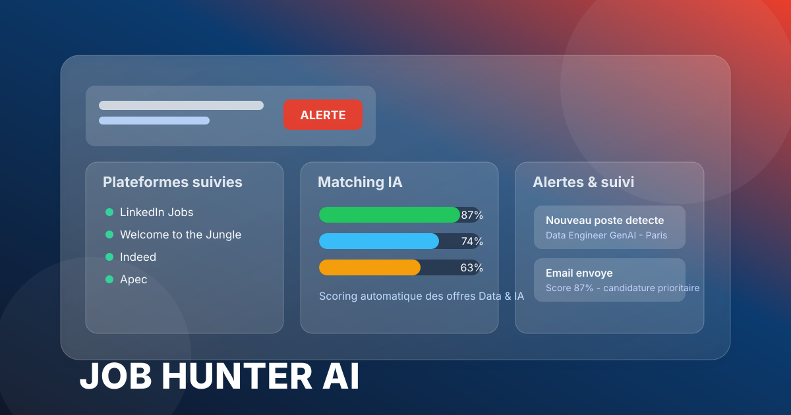
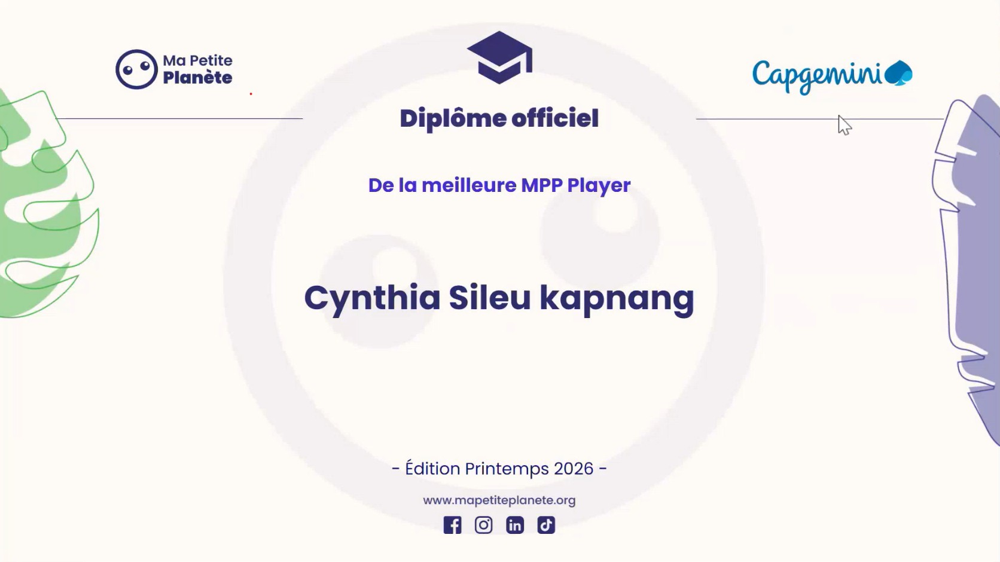

Data & IA
Je conçois des architectures de données et des applications d’IA qui permettent de transformer des besoins métier en solutions exploitables, fiables et évolutives.
Cynthia Sileu Kapnang
Je transforme des besoins complexes en solutions data et IA utiles, scalables et alignées sur les objectifs business. Mon approche associe architecture, automatisation, qualité des données, expérience utilisateur et création de produits à fort impact.

Je conçois des solutions Data, IA et plateformes cloud à forte valeur métier.
Je conçois des architectures de données et des applications d’IA qui permettent de transformer des besoins métier en solutions exploitables, fiables et évolutives.
J’aime automatiser les processus, structurer les flux de données et créer des systèmes qui réduisent le travail manuel et améliorent la décision.
Mon approche combine architecture de données, plateformes cloud, backend robuste et innovation IA pour créer des produits utiles, performants et orientés business.
Je conçois des solutions qui résolvent des problèmes métier, créent de la valeur et améliorent les décisions.
Je transforme des besoins complexes en solutions concrètes, structurées et exploitables par les utilisateurs.
J’associe vision produit, architecture, données et expérience utilisateur pour créer des applications utiles dès la première version.
Je conçois des systèmes évolutifs, sécurisés et capables de soutenir des cas d’usage réels et multi-utilisateurs.
Je réduis le travail manuel et j’optimise les flux de données, de décision et de suivi de processus.
J’intègre l’IA dans des cas d’usage concrets pour améliorer la décision, la recherche, la compréhension et la productivité.
Je conçois des interfaces claires et utiles, orientées décision, simplicité d’usage et valeur métier.
De l'analyse de donnees a la conception de solutions IA industrielles.
J'ai commencé par comprendre les besoins métier, la qualité des données et les processus opérationnels. Au fil de mon parcours, j'ai évolué vers la conception de pipelines de données, puis vers le développement de solutions d'IA générative basées sur les LLM, le RAG et les systèmes multi-agents.
Aujourd'hui, je combine Data Engineering, IA Générative et Data Governance afin de concevoir des solutions fiables, gouvernées et déployables en production.
Ma conviction : La réussite d'une solution IA ne dépend pas uniquement du modèle, mais de tout ce qui l'entoure : données, gouvernance, architecture et adoption métier.
Industrialiser des chatbots GenAI sans perdre en fiabilité, traçabilité ni gouvernance.
Pipeline standardisé, RAG, MLflow et Unity Catalog pour sécuriser le cycle de vie IA.
Un socle plus robuste pour des usages IA en production, avec un contrôle plus clair des modèles.
Créer une expérience bancaire premium et segmentée selon les profils clients, analystes et data stewards.
Plateforme multi-espaces avec backend FastAPI, orchestrateur multi-agent et masquage des données sensibles.
Un service plus sûr, plus contextuel et mieux piloté par les KPI, la conformité et l'observabilité.
Détecter plus tôt les anomalies et renforcer la confiance dans les données critiques.
Agents IA couplés à des règles métier et à des traitements PySpark sur Databricks.
Une gouvernance plus fiable et un contrôle plus rapide des écarts métier.
Je combine Data Engineering, IA Générative et gouvernance des données pour construire des solutions fiables et évolutives.
Mon objectif est de transformer des besoins métier en produits Data & IA utiles, mesurables et créateurs de valeur.
Compétences clés structurées par domaine d’expertise.
Job Hunter AI, plateforme SaaS de veille emploi, CRM de candidatures et assistant carrière alimenté par l’IA.

Industrialisation de chatbots GenAI et RAG pour un déploiement fiable, traçable et gouverné.
Technologies : Databricks, MLflow, Unity Catalog, Python
Impact : meilleure traçabilité des modèles et gouvernance IA.

Plateforme bancaire multi-espaces avec assistance client, analytics et gouvernance IA.
Technologies : Azure OpenAI, RAG, FastAPI, Python
Impact : expérience client plus sûre, plus rapide et plus orientée décision.

Pipeline d’évaluation d’agents IA pour comparer qualité des réponses et qualité du retrieval.
Technologies : RAGAS, Streamlit, Python, LLM, Azure Blob Storage
Impact : benchmark fiable avant mise en production.

Agents IA pour la détection d’anomalies et la gouvernance de la qualité des données.
Technologies : PySpark, Databricks, Python, Rules Engine
Impact : détection plus rapide des écarts critiques et meilleure confiance dans les données.

Pipeline automatisé de collecte, transformation et consolidation de données de trafic.
Technologies : Apache AIRFLOW, BashOperator, Bash, Python, ETL

Produit SaaS de veille emploi, CRM de candidatures et assistant carrière alimenté par l’IA : centralisation, priorisation, suivi et recommandations intelligentes.
Impact : réduction du temps de recherche, meilleure priorisation des opportunités, suivi centralisé des candidatures et assistance IA orientée décision.

Assistant de recommandation automobile base sur Claude.
Technologies : Claude, Python, Prompt Engineering
Impact : prototype fonctionnel et personnalisation rapide.
Parcours de certification oriente Data Engineering, IA Generative et Cloud.
Fondamentaux Lakehouse, architecture Databricks et bonnes pratiques Data Engineering.
PDFConception de solutions d'IA Generative et agents IA en contexte enterprise.
PDFModelisation BI, dashboards et communication visuelle de la performance.
VoirFondamentaux cloud public et services data manages sur GCP.
VoirPrototypage d'un assistant conversationnel avec Claude en contexte competitif.
PDFCertification orientee Product Information Management (PIM) et Master Data Management (MDM).
Date : 2026
VoirAu cours de cette formation et de ses assessments pratiques, j’ai travaillé sur l’ensemble des composantes d’une plateforme PIM/MDM : modélisation des données, workflows, intégration, APIs REST et reporting de gouvernance.
PIM • MDM • Data Governance • Data Quality • REST APIs • Data Integration • Reporting & Analytics
Date : 2026
CredlyTechnologies clés utilisées pour concevoir, industrialiser et sécuriser des solutions Data, IA et plateformes cloud.
Au-dela de la technique, des initiatives collectives qui traduisent mes valeurs.

Edition Printemps 2026Ma Petite Planete x Capgemini
Recompensee lors de l'edition Printemps 2026 de Ma Petite Planete pour mon engagement et ma participation active aux defis environnementaux.
Cette experience reflete une conviction que j'applique également dans mes projets professionnels : avoir un impact positif grâce à des actions concrètes.
"Au-dela de la performance technique, je crois aux projets qui laissent une empreinte utile."
Activite, langages et volume de projets.
Je recherche des opportunités dans les domaines suivants.
Disponible pour des opportunites Data Engineering, GenAI, IA et Cloud.
J'aime contribuer à des projets où la Data, l'IA et le métier se rencontrent.